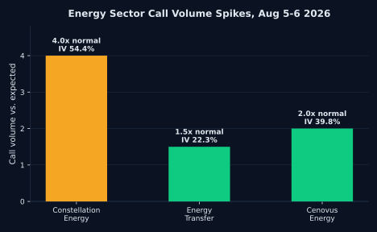

Energy Options Turn Bullish as Oil Whipsaws on Iran Talks

US stocks closed lower on Thursday, with the Dow Jones Industrial Average sliding 0.9%, the S&P 500 down 0.2%, and the Nasdaq Composite off 0.1%, as investors weighed a slew of corporate earnings against a jump in oil prices. Futures were mixed heading into Friday's session, with Nasdaq 100 futures up 0.45% and S&P 500 futures adding 0.15%, while Dow futures sat flat. The catalyst everyone is waiting on this morning is the July jobs report. Consensus calls for a modest gain of roughly 85,000 nonfarm payrolls with unemployment holding at 4.2%, following a weak June print of just 57,000 jobs added.
The more interesting setup for swing traders this week has been oil. West Texas Intermediate crude dropped more than 10% over two sessions earlier this week as reports circulated that the US and Iran were closing in on a deal to reopen the Strait of Hormuz, with WTI slipping toward $75 a barrel. That optimism reversed hard on Thursday after Iran's state media published a draft plan laying out restrictive conditions for ship traffic through the strait. Brent crude jumped 3.8% to close at $82.49 and WTI gained about 2.8% to settle at $77.29. A single geopolitical headline moving crude nearly 3% in a day is exactly the kind of volatility swing traders should be tracking closely right now.

That whipsaw is showing up in options flow. Constellation Energy saw 8,850 calls trade, about 4 times its expected volume, with implied volatility climbing more than a point to 54.38%. Energy Transfer saw 17,379 calls change hands, 1.5 times normal, with IV up to 22.34%. Cenovus Energy printed 9,168 calls, roughly double its usual pace, with IV rising to 39.76%. What makes this notable is the context: the broader market's fear gauge, the VIX, sat near 16.50 earlier this week with 20-day realized volatility at 14.1% and falling, meaning this looks like a sector-specific bet, not a market-wide flight to hedges.
For a swing trader, elevated call volume with rising implied volatility concentrated in three energy names, while the broader tape stays calm, is a setup worth watching rather than chasing blind. It reads like traders positioning for oil to stay elevated or climb further if the Hormuz negotiations stall again. But the same headline risk that pushed crude up 2.8% in a day can just as easily reverse it. Layer in a jobs report that could move the entire market by midday, and single-name conviction gets harder to justify without a clear read on what is actually driving the move.
None of this is a signal to buy energy calls today. It is a reminder that single-day volatility spikes driven by geopolitical headlines and a live jobs report are the environment where undisciplined entries get punished fastest. Traders watching Constellation Energy, Energy Transfer, or Cenovus Energy this week should wait for confirmation, not just elevated options flow, before sizing a position.